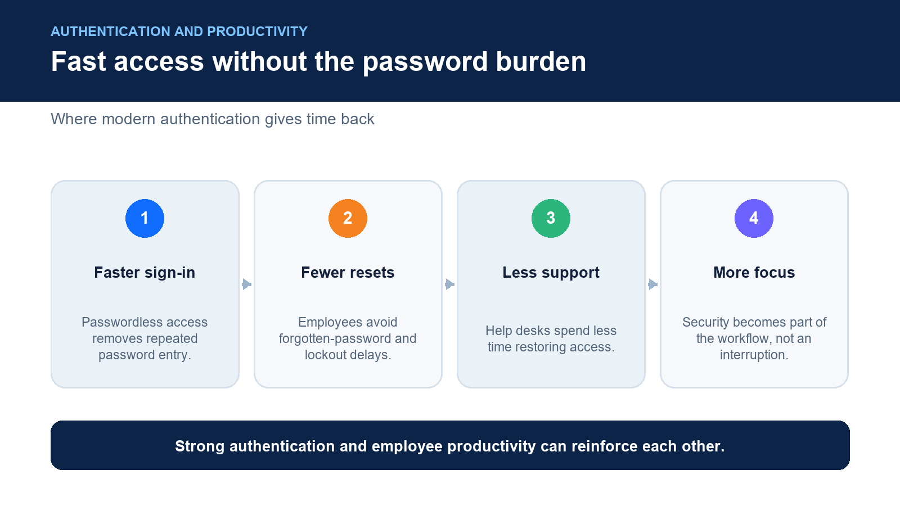
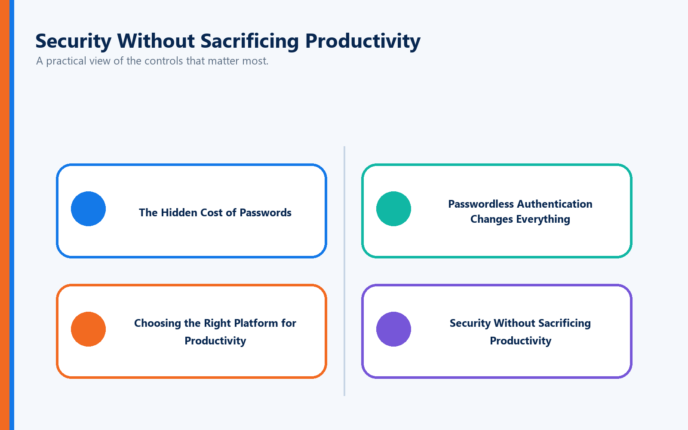

One of the most common concerns organizations hear when introducing Multi-Factor Authentication (MFA) is:
"Is this going to slow me down every time I log in?"
It's a fair question.
Employees log into their computers, email, business applications, VPNs, cloud services, and collaboration platforms dozens of times each day. If every authentication takes longer, even a few extra seconds can add up to lost productivity across an entire organization.
The reality, however, is more nuanced.
Traditional MFA can introduce additional login steps. Modern passwordless authentication can actually make logging in faster while dramatically improving security.
The difference lies in the authentication technology you choose.
What Is Full Duplex Authentication® (FDA)?
Full Duplex Authentication® (FDA) is the patented authentication technology that powers PasswordFree® and NoPass™. Rather than adding verification steps to a password, FDA securely validates both the user and the trusted device through a unified, passwordless authentication process. The result is phishing-resistant authentication, faster access to business resources, fewer user interruptions, and simplified identity management.
Instead of asking users to remember complex passwords and retrieve one-time verification codes, FDA streamlines authentication into a seamless, secure experience.
Does Traditional MFA Slow Users Down?
Sometimes.
Traditional MFA typically follows this sequence:
Enter your username.
Type your password.
Wait for a verification code.
Open an authenticator app or retrieve an SMS message.
Enter the code.
Wait for authentication.
Access your application.
Each individual step may only take a few seconds.
But multiply those seconds by:
20–40 logins per day
Hundreds of employees
Thousands of workdays
The productivity impact becomes significant.
Even worse, every additional authentication step creates another opportunity for user frustration.
The Hidden Cost of Passwords
Many organizations assume MFA is what slows users down.
In reality, passwords are usually the biggest source of lost productivity.
Employees routinely experience:
Forgotten passwords
Expired passwords
Password reset requests
Locked accounts
Multiple password prompts
Credential synchronization issues
Industry research consistently shows that password-related support requests remain one of the largest categories of IT help desk tickets.
When organizations remove passwords from the authentication process, they often discover that authentication actually becomes faster—not slower.
Passwordless Authentication Changes Everything
Passwordless authentication eliminates many of the delays associated with traditional MFA.
Instead of requiring employees to:
Remember passwords
Retrieve authentication codes
Respond to repeated verification prompts
Users authenticate through trusted, phishing-resistant methods designed to verify identity quickly and securely.
The result is:
Faster logins
Fewer interruptions
Better user experience
Stronger security
Modern authentication should reduce friction—not create it.
Choosing the Right Platform for Productivity
Not every organization has the same operational requirements. The authentication platform you choose should align with your infrastructure, workforce, and security objectives.
PasswordFree® — Fast SaaS Authentication
Organizations looking for a cloud-delivered authentication solution often choose PasswordFree®, the company's Software-as-a-Service (SaaS) platform powered by Full Duplex Authentication®.
PasswordFree® is ideal for organizations seeking:
Rapid deployment
Minimal administrative overhead
Passwordless authentication
Simplified user management
Improved employee productivity
Lower help desk costs
Because PasswordFree® is delivered as a managed SaaS solution, organizations can modernize authentication quickly without deploying additional authentication infrastructure.
NoPass™ — Enterprise Authentication Without Compromise
Large enterprises often require deeper integration with existing identity systems and greater control over authentication infrastructure.
For these environments, NoPass™ provides a Platform-as-a-Service (PaaS) solution that can be deployed:
On premises
In private cloud environments
In customer-controlled cloud infrastructure
Powered by Full Duplex Authentication®, NoPass™ integrates with enterprise technologies including:
Microsoft Active Directory
Microsoft Entra ID
Microsoft 365 / Office 365
Microsoft Azure
Existing enterprise authentication environments
This flexibility allows organizations to improve authentication without disrupting existing business operations.
Why Many Financial Institutions Choose NoPass™
Highly regulated industries often have unique operational and compliance requirements.
Many financial institutions, banks, healthcare organizations, government agencies, and critical infrastructure providers prefer to maintain direct control over authentication infrastructure rather than relying solely on cloud-hosted services.
Because NoPass™ supports both on-premises and customer-controlled cloud deployments while integrating with existing Microsoft identity environments, it provides the flexibility these organizations often require while delivering a modern passwordless experience powered by FDA.
Productivity Isn't Just About Login Speed

Authentication affects much more than the few seconds spent signing in.
Organizations should also consider:
Fewer Password Resets
Password resets interrupt employees and consume valuable IT resources.
Passwordless authentication significantly reduces these requests.
Less Help Desk Dependency
Employees spend less time waiting for account recovery or unlocking credentials.
IT teams spend less time handling routine password issues.
Faster Access to Applications
When authentication becomes seamless, employees remain focused on their work instead of managing credentials.
Small time savings repeated throughout the day create meaningful productivity gains across the organization.
Improved Employee Satisfaction
Employees appreciate technology that simply works.
Reducing authentication friction improves the overall digital workplace experience while encouraging stronger security practices.
Security Without Sacrificing Productivity

One of the biggest misconceptions about MFA is that stronger security must come at the expense of convenience.
Modern passwordless authentication proves otherwise.
Authentication powered by Full Duplex Authentication® helps organizations defend against:
Credential theft
Phishing attacks
Password spraying
Account takeover
Ransomware
Social engineering attacks targeting passwords
At the same time, it reduces the daily friction associated with passwords and repeated verification prompts.
Security and productivity are no longer competing priorities.
Best Practices for Improving Login Speed
Organizations looking to maximize both security and productivity should:
Eliminate password dependency whenever possible.
Deploy passwordless authentication.
Begin with a pilot group before enterprise rollout.
Integrate with existing identity infrastructure.
Communicate changes clearly to employees.
Provide streamlined enrollment and recovery processes.
Continuously monitor user experience after deployment.
These practices improve adoption while minimizing disruption.
Why Authentication Powered by Full Duplex Authentication® Is Different
Many MFA platforms focus on adding another layer of verification to passwords.
Authentication powered by Full Duplex Authentication® takes a fundamentally different approach.
Instead of building security around passwords, FDA eliminates password dependency entirely, creating a unified authentication experience that is faster for users and significantly more resistant to today's cyber threats.
Whether delivered through PasswordFree® for organizations seeking a cloud-native SaaS solution or NoPass™ for enterprises requiring Active Directory integration, Microsoft Entra ID connectivity, Microsoft 365 support, Azure integration, or on-premises deployment, organizations benefit from:
Faster user logins
True passwordless authentication
Reduced help desk costs
Lower administrative overhead
Phishing-resistant security
Higher employee productivity
Improved user satisfaction
Stronger cyber resilience
Authentication should never become an obstacle to getting work done.
Final Thoughts
If your experience with MFA involves typing passwords, opening an authenticator app, entering verification codes, and waiting for approval, it's understandable to worry about productivity.
But that experience reflects older authentication models—not the capabilities of today's passwordless technologies.
Modern authentication platforms powered by Full Duplex Authentication® demonstrate that organizations no longer have to choose between security and efficiency.
Organizations seeking rapid cloud deployment can implement PasswordFree®, while enterprises requiring Active Directory integration, Microsoft Entra ID connectivity, Microsoft 365 support, Azure integration, or on-premises deployment flexibility can deploy NoPass™. Both platforms leverage Full Duplex Authentication® to deliver a passwordless authentication experience that strengthens security while reducing login friction.
The real question isn't whether MFA slows employees down.
It's whether your authentication solution is designed for yesterday's password-centric world—or today's passwordless future.